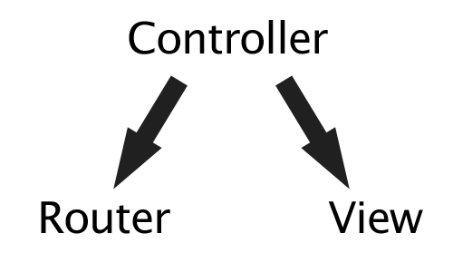
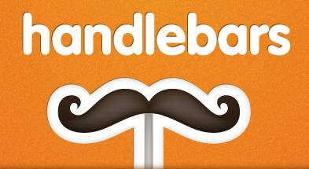

Marcin Bunsch
marcin@futuresimple.com
github.com/marcinbunsch
twitter.com/marcinbunsch

What is Backbone?
- Client-side MV* Framework
- Created by Jeremy Ashkenas
Backbone Models
var Todo = Backbone.Model.extend({
// Default attributes for the todo item.
defaults: function() {
return {
title: "empty todo...",
done: false
};
},
// Toggle the `done` state of this todo item.
toggle: function() {
this.save({done: !this.get("done")});
}
});
var todo = new Todo({ title: "Deliver presentation" })
togo.get('title') // => "Deliver presentation"Backbone Collections
var TodoCollection = Backbone.Collection.extend({
// Reference to this collection's model.
model: Todo,
// Filter down the list of all
// todo items that are finished.
done: function() {
return this.filter(function(todo){
return todo.get('done');
});
}
});
var todos = new TodoCollection()
todos.fetch()Backbone Controllers
Backbone Controllers

Backbone Controllers
- 
Backbone Routers
var AppRouter = Backbone.Router.extend({
routes: {
'': 'showTodos',
'help': 'showHelp'
},
showTodos: function() {
new TodosView();
},
showHelp: function() {
new HelpView();
}
})Backbone Views
Backbone Views - templating
var TodoView = Backbone.View.extend({
render: function() {
var source = $('#mainViewTemplate').html()
var template = _.template(source);
var data = this.model.toJSON()
var html = template(data);
this.$el.html(html);
return this;
}
})
var todo = new Todo();
todo.set('title', 'MOAR COFFEE');
var todoView = new TodoView({ model: todo });Backbone Views - events
var TodoView = Backbone.View.extend({
// ...
events: {
"click .toggle" : "toggleDone",
},
// Toggle the `"done"` state of the model.
toggleDone: function() {
this.model.toggle();
}
});Backbone Views - binding
var TodoView = Backbone.View.extend({
initialize: function() {
this.model.bind('change', this.render, this);
}
})Backbone Views - templating again
var TodoView = Backbone.View.extend({
render: function() {
var source = $('#mainViewTemplate').html()
var template = _.template(source);
var data = this.model.toJSON()
var html = template(data);
this.$el.html(html);
return this;
}
})
Why Handlebars?
- Templates are clean
- Helpers store the logic
- Precompilation with a light runtime
todos.handlebars
<div class="view">
<input class="toggle" type="checkbox" {{checkedIf done}}>
<label>{{title}}</label>
<a class="destroy"></a>
</div>
<input class="edit" type="text" value="{{title}}" />todos.handlebars
<div class="view">
<input class="toggle" type="checkbox" checked="checked">
<label>KILL ALL HUMANS</label>
<a class="destroy"></a>
</div>
<input class="edit" type="text" value="KILL ALL HUMANS" />handlebars dir -f output.js
Handlebars.templates['todos']Applied
var TodoView = Backbone.View.extend({
template: 'todos',
render: function() {
var template = Handlebars.templates[this.template]
var data = this.model.toJSON()
var html = template(data);
this.$el.html(html);
return this;
}
});OMG Pattern
var HandlebarsView = Backbone.View.extend({
render: function() {
var template = Handlebars.templates[this.template]
var data = this.model.toJSON()
var html = template(data);
this.$el.html(html);
return this;
}
});Profit!
var TodoView = HandlebarsView.extend({
template: 'todos'
});